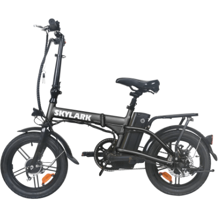

NAKTO SKYLARK
 This is One of the most compact, affordable electric city bikes on the market. This bike is a perfect commuter for urban workers. The Skylark will get you up to 18 miles per charge which cover the majority of the urban commuters looking for a fast, fun and efficient way to get to work. The Nakto Skylark 36V 10 ah battery can be charged in 4-6 hours which makes it easy if you need to charge your bike on the go or at work. Nakto has been known to make the batteries easily accessible for riders to take the battery out and charge.
This is One of the most compact, affordable electric city bikes on the market. This bike is a perfect commuter for urban workers. The Skylark will get you up to 18 miles per charge which cover the majority of the urban commuters looking for a fast, fun and efficient way to get to work. The Nakto Skylark 36V 10 ah battery can be charged in 4-6 hours which makes it easy if you need to charge your bike on the go or at work. Nakto has been known to make the batteries easily accessible for riders to take the battery out and charge.
Let’s face it; a bike is as good as it is comfortable. Nobody wants to race in the country roads riding something akin to a Swiss army truck. Our bikes boast of comfortable big saddles and front fork suspension that absorbs the hits and makes the ride what it rightfully should be: a delight.
Strength and Comfort
The Nakto Skylark is a very strong electric bike for the size. The Skylark features high strength carbon steel with a car certified powder coating paint to serve you for years! If you are looking for an affordable, strong bike that will get you to and from work, this is the perfect bike for you.
There are more needs than there is money, and you don’t want to end up with the sour grapes experience of having to sell your bike for junk six months after buying it. What you buy has got to be worth every dollar. Our bikes come standard with high strength carbon steel that can comfortably carry a load of 110kgs without crumbling. That’s not all. Our bikes boast of superior car paint that is sure to take the harsh vagaries of our weather without peeling off or fading. With proper maintenance, our bikes will comfortably give you a service of 5 years while in excellent condition. Nakto offers a one year warranty against manufacturing defects.
Performance of the Skylark on Road
Compact
The Skylark e-bike is perfect for your commute- it folds in seconds so you can take it with you on the subway. Or you can store it in the trunk of your car for ultimate portability. The Nakto Skylark's battery has a USB charger attached for your convenience. The battery pack is quick and easy to remove which is what us urban workers are seeking.
One of the most compact bikes in the industry, the Nakto Skylark can fold in less than a minute and be thrown into smaller trunks, stored in the closet or even under your bed! If you're looking for low maintenance, an affordable commuter bike you are in the right place.
Features
- Easy riding: throttle; pedal assistant pedaling ；three models
- Durable:high-strength carbon steel and superior car paint, the bike will serve you several years
- Adjustable: The adjustable saddle height suit for different needs
- Comfortable: comfortable seat post and front and rear disc brake, easily assists you to enjoy your riding.
- Safety: Powerful brakes；Motor safety cutoff
- Easy to carry
Overall Observations
If you are looking for a small, affordable bike to get you from point A to B with reliability, this bike is for you. The Nakto Skylark goes 15-18 miles with pedal assist which means it will cover 90% of city commuters average commute distance. The Skylark also has a very accessible battery and easy to remove so you can bring it into your workplace to charge. You can even fold the bike up and place it near your desk since it is a very compact ebike.
Customer Service
- All Nakto’s electric bicycles is covered under manufacturer's 1 year warranty for the original owner against all manufacturing defects.
- Warranty includes main bike components: motor, battery, controller, throttle, brake and PAS system.
- Parts are warranted to be free from manufacturer defects in materials and/or workmanship for a 1 year period from the date of original purchase.
Disadvantages
- The Bike is not a Cruiser as it claims to be
- It is not an all weather Bike, In Rainy regions, the components tend to fail
- Parts have limited warrant from the date of purchase, not from the date the customer receives the bike